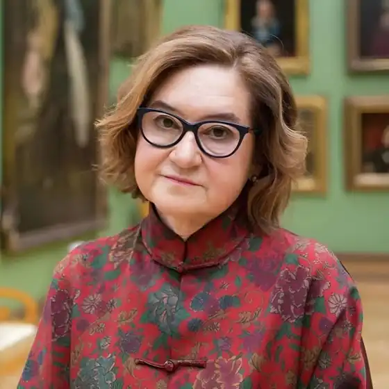
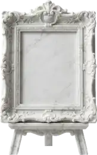

Зельфира Трегулова

Поможет увидеть масштаб идеи и понять, как представить её так, чтобы привлечь аудиторию, партнёров и деньги.
- Искусствовед, куратор масштабных международных выставочных проектов
- Создательница первых в России выставок-блокбастеров
- Экс-генеральный директор Третьяковской галереи